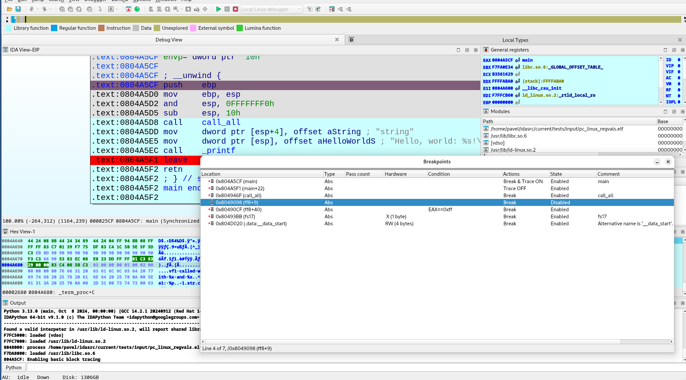
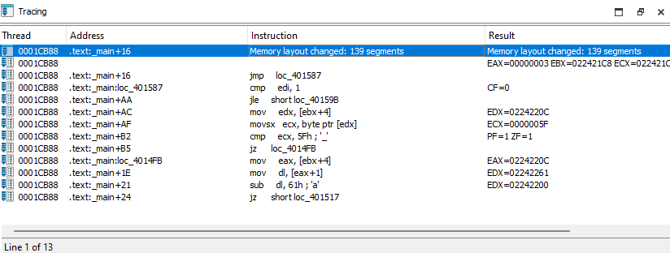
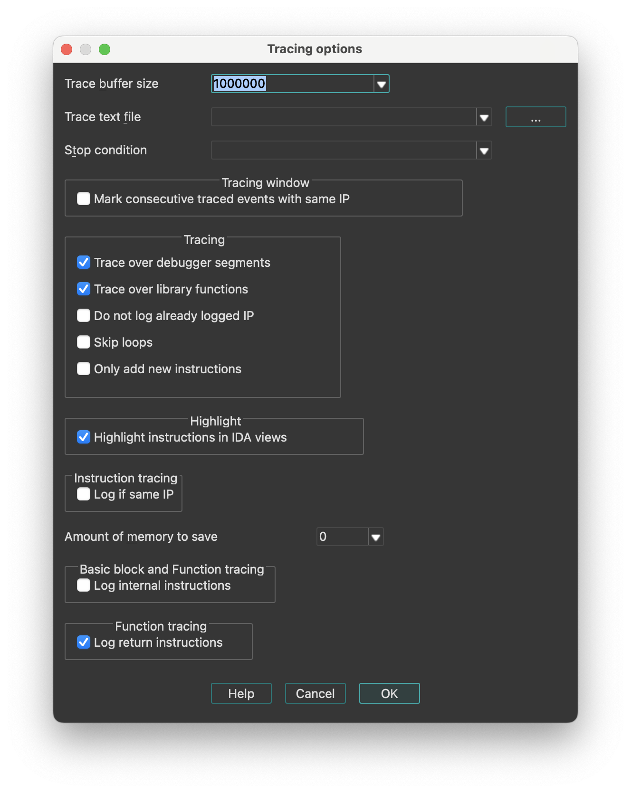

Debugger menu actions for Common
Below is an overview of all actions that can be accessed from this menu.
| UI Action Name | Action Name | Description |
|---|---|---|
| Quick debug view | QuickDbgView | Quickly open a debug view |
| Debugger windows | `` | |
| Debugger window | Debugger | Open debugging window. More… |
| Thread list | Threads | Open threads window. More… |
| Module list | Modules | Open modules window. More… |
| Locals | Locals | Open local variables window |
| Stack view | StackView | Stack view |
| Stack trace | StackTrace | Open the stack trace window. More… |
| Watch view | WatchView | Open a new watch window |
| Breakpoints | `` | |
| Breakpoint list | Breakpoints | Open breakpoints window. In this window, you can view information related to existing breakpoints. Breakpoints are saved in the database, and restored as soon as possible (once the memory becomes writeable). More… |
| Add breakpoint | BreakpointAdd | Add a breakpoint to the current address. More… |
| Delete breakpoint | BreakpointDel | Delete the breakpoint at the current address |
| Watches | `` | |
| Watch list | WatchList | Open the watch list window. More… |
| Add watch | AddWatch | Add a variable to watch. This command adds a watch at the current address. The watch is visible in the Watch list window (accessible via the WatchList action). |
| Delete watch | DelWatch | Delete an existing watch. |
| Tracing | `` | |
| Tracing window | TracingWindow | Open tracing window. More… |
| Clear trace | ClearTrace | This command removes all trace events from the Tracing window. It also removes any loaded trace file used for diffing against the currently loaded trace. |
| Instruction tracing | ToggleTraceInstructions | Toggle instruction tracing. More… |
| Basic block tracing | ToggleTraceBasicBlocks | Toggle basic block tracing. More… |
| Function tracing | ToggleTraceFunctions | Toggle function tracing. More… |
| Add write trace | WriteTraceAdd | Add a write trace to the current address. More… |
| Add read/write trace | ReadWriteTraceAdd | Add a read/write trace to the current address. More… |
| Add execution trace | ExecTraceAdd | Add an execution trace to the current address. More… |
| Tracing options… | SetupTracing | This command opens a dialog box that allows you to specify different settings related to the tracing features. More… |
| Start process | ProcessStart | Start a new process in the debugger or continue a debugged process. |
| Attach to process… | ProcessAttach | Attach the debugger to a running process |
| Process options… | SetupProcess | Open the Process options dialog. More… |
| Pause process | ProcessPause | Pause or continue the debugged process |
| Terminate process | ProcessExit | Terminate the debugged process |
| Detach from process | ProcessDetach | Detach the debugger from the debugged process |
| Refresh memory | RefreshMemcfg | Refresh memory. More… |
| Take memory snapshot | TakeSnapshot | Take memory snapshot. More… |
| Step into | ThreadStepInto | Execute each instruction |
| Step over | ThreadStepOver | Execute instructions without entering into functions |
| Run until return | ThreadRunUntilReturn | Run until execution returns from the current function. More… |
| Run to cursor | ThreadRunToCursor | Execute instructions until instruction under the cursor is reached |
| Continue backwards | ProcessGoBackwards | Continue execution backwards in a trace (with supported debuggers) |
| Step into (backwards) | ThreadStepIntoBackwards | Execute each instruction backwards |
| Step over (backwards) | ThreadStepOverBackwards | Execute instructions backwards without entering into functions. More… |
| Run to cursor (backwards) | ThreadRunToCursorBackwards | Execute instructions backwards until instruction under the cursor is reached |
| Switch to source | SwitchToSource | Switch from disassembly to source view |
| Use source-level debugging | ToggleSourceDebug | Use source-level debugging |
| Open source file… | OpenSourceFile | Open a source file |
| Debugger options… | SetupDebugger | Open Debugger setup dialog. More… |
| Switch debugger… | SwitchDebugger | Select debugger. More… |
Debugger window
Open debugging window. In this window, you can view the register values for the selected thread. The debugger always selects the thread where the latest debugging event occurred.
For most registers, we have two different boxes:
- the first box (on the left) indicates the current value of the register. Blue indicates that the value has changed since the last debugging event. Purple indicates that the value has been modified by the user. A popup menu is available on this control, offering different commands.
- the second box (on the right) shows the current value of the register, interpreted like an address (if possible).
For a segment register, we only have one box indicating the current value.
For the flags register, we have one box indicating the current value, and small boxes indicating the status of the most important flags.
A popup menu is accessible everywhere in the window, which allows the user to show or hide different parts of the window: toolbar, thread list and available register classes.
Thread list
Open threads window. In this window, you can view all the threads of the debugged process. Double clicking on a thread jumps to its current instruction (available only if the process has been suspended). Double clicking also changes the current thread for the CPU window.
The right click brings a popup menu, where you can suspend or resume threads. The following thread states are possible:
- Running: the thread is running
- Ready: the thread is ready to run but the application has been suspended
- Suspended: the thread has been suspended by the user
Module list
Open modules window. Opens the modules window. This window lists all the modules loaded by the debugged process. Double click on a module to see the list of its exported names.
The right click menu allows for loading debug information for the current module. For that, select the “Load debug symbols” command from the popup menu. If IDA manages to find and load the corresponding debug information file, it will import all symbols from it into the database. Currently, only PDB files are supported. The operation result is displayed in the message window.
Stack trace
Open the stack trace window. This window displays the function calls that brought the current instruction.
The top of the Stack Trace window lists the last function called by the program. Below this is the listing for the previously called functions. Each line indicates the name of the function which called the function represented by the previous line. Double clicking on a line jumps to the exact address of the instruction realizing this call.
Currently, IDA uses the EBP frame pointer values to gather the stack trace information. It will fail for functions using other methods for the frame.
Breakpoint list
Open breakpoints window. In this window, you can view information related to existing breakpoints. Breakpoints are saved in the database, and restored as soon as possible (once the memory becomes writeable).

The “Pass count” column indicates how many times the program needs to hit the breakpoint before being suspended (0 means “always suspend”).
Add breakpoint
Add a breakpoint to the current address.
If an instruction exists at this address, an instruction breakpoint is created. Otherwise, IDA offers to create a hardware breakpoint and allows the user to edit breakpoint settings (Action BreakpointEdit). Hardware breakpoints can be either real hardware breakpoints or page breakpoints.
Watch list
Open the watch list window. Opens the assembler level watch list window. In this window you can view memorized watches. A watch allows the user to continuously see the value of a defined item.
Tracing window
Open tracing window. In this window, you can view some information related to all traced events. The tracing events are the information saved during the execution of a program. Different type of trace events are available:
- instruction tracing events ,
- function tracing events and
- write,
- read/write, or
- execution tracing events.

During the execution, the list of traced events is disabled, as it couldn’t be continuously synchronized with the execution without rendering the whole tracing very slow. If a ‘=’ character is displayed in the ‘Thread’ and ‘Address’ columns, it indicates that the trace event occurred in the same thread and at the same address as the previous trace event.
Instruction tracing
Toggle instruction tracing. This command starts instruction tracing. You can then use all the debugger commands as usual: the debugger will save all the modified register values for each instruction.
When you click on an instruction trace event in the Tracing window, IDA displays the corresponding register values preceding the execution of this instruction. In the ‘Result’ column of the Tracing window, you can also see which registers were modified by this instruction. By using this information, you can for example quickly determine which instruction modified a specific register, or you can even backtrace the execution flow. Note that the IP register is never printed in the ‘Result’ column, although it is usually modified by almost any instruction (except perhaps some prefixed instructions like REP MOVSB, …).
Internally, the debugger runs the current thread step by step to properly obtain all the required register values. This explains why instruction tracing is slower than a normal execution.
Basic block tracing
Toggle basic block tracing. This command starts basic block tracing. You can then use all debugger commands as usual: the debugger will save all addresses where a temporary basic block breakpoint was reached.
Internally, the debugger runs the current thread normally, setting temporary breakpoints in the last instruction of every basic block of every function referenced from the current function and also at any call instruction in the middle of the traced basic blocks.
Basic block tracing is slower than normal execution but faster than instruction or function tracing.
Function tracing
Toggle function tracing. This command starts function tracing. You can then use all debugger commands as usual: the debugger will save all addresses where a call to a function or a return from a function occurred.
Internally, the debugger runs the current thread step by step to properly detect all function calls and returns. This explains why functions tracing is slower than a normal execution.
Add write trace
Add a write trace to the current address. Each time the given address will be accessed in write mode, the debugger will add a trace event to the Tracing window. In fact, write traces are nothing more than breakpoints with special properties: they don’t stop and they simply add a trace event when the breakpoints are reached.
Internally, the debugger will add a hardware breakpoint on the given address, so all the restrictions for hardware breakpoints are also valid for write traces.
Add read/write trace
Add a read/write trace to the current address. This command adds a read/write trace to the current address. Each time the given address will be accessed in read or write mode, the debugger will add a trace event to the Tracing window. In fact, read/write traces are nothing more than breakpoints with special properties: they don’t stop and they simply add a trace event when the breakpoints are reached. Internally, the debugger will add a hardware breakpoint on the given address, so all the restrictions for hardware breakpoints are also valid for read/write traces.
Add execution trace
Add an execution trace to the current address. Each time the instruction at the given address will be run, the debugger will add a trace event to the Tracing window.
In fact, execution traces are nothing more than breakpoints with special properties: they don’t stop and they simply add a trace event when the breakpoints are reached.
Internally, the debugger will add a breakpoint instruction at the given address.
Tracing options…
This command opens a dialog box that allows you to specify different settings related to the tracing features.

-
Trace buffer size: This setting indicates how many tracing events can fit in the trace buffer. If the debugger must insert a new event and the buffer is full, the oldest tracing event will be removed. However, if you specify a size of 0, the buffer size isn’t limited. Notice that, for example, in the case of an instructions trace, all executed instructions could be logged, which would quickly fill up the memory!
-
Trace file: If a filename is specified, all future traced events will be appended to it.
-
Trace directory: The directory were trace files for the current database will be saved. If not specified, the IDB directory will be used.
-
Stop condition: This IDC expression will be evaluated before the execution of each instruction. If the expression returns true, the debugger will suspend the execution. Please note that you can use register names in the condition.
Tracing:
- Trace over debugger segments: If selected, the debugger will not go step by step in debugger segments (segments not available in the database).
- Trace over library functions: If selected, the debugger will not go step by step in library functions.
{% hint style=“info” %} Enabling these options will speed up the execution, as many instructions (from debugger segments and/or library functions) will not be traced. Disabling these options can quickly fill the Tracing window, as all instructions in DLLs and system functions will be executed step by step. Notice that both options influence the way instruction and function tracings will work. {% endhint %}
Internally, the debugger proceeds like this:
-
Memorize the return address associated with the last executed call instruction in database segments (the previously saved one is overwritten).
-
Setup a temporary breakpoint on this address once the IP is in a debugger segment or library function, disable step by step, and run the thread.
-
Reenable step by step once this temporary breakpoint is reached.
-
Do not log already logged IP: If selected, already executed instructions will not be logged if they are executed again.
-
Skip loops: If selected, tracing will be temporarily disabled for some loops constructs.
Highlight:
- Highlight instructions in IDA views: If selected, recorded instructions will be displayed in IDA views (disassembly views) with a different background color.
Instruction tracing:
- Log if same IP: If selected, the debugger will also log all register modifications occurring during the execution of prefixed instructions like REP MOVSB, …
Function tracing:
- Log return instructions: If selected, the debugger will also log function returns. If disabled, only function calls are logged.
Basic block and function tracing:
- Log internal instructions: If selected, all instructions from the current basic block will be logged and displayed in the ‘Tracing’ window, instead of only the last instruction of the basic block.
Process options…
Open the Process options dialog. It allows to specify different settings related to the process being debugged.
| Application | Host application to launch. When the debugging target (== 'input file') is an executable file, this field is equal to the 'input file'. If this field is wrong, IDA will not be able to launch the program. For remoting debugging, this field denotes a remote file. |
| Input file | The input file used to create the database. For remoting debugging, this field denotes a remote file. |
| Directory | Directory to start the application. If empty, then the current directory will be used. For remoting debugging, this field denotes a remote directory. |
| Parameters | Optional parameters to pass to the debugged application (or the host application) when it starts. This field may be empty. The standard input/output/error channels can be redirected using the bash shell notations. For example: >output 2>&1 |
| Hostname | If entered, denotes the name of the remote host with the application to debug. In this case, a remote IDA server on this host must be launched. Click here to see the list of remote servers. |
| Port | The port number of the remote server |
| Password | Optional password to protect your server from strangers connecting to it and running arbitrary commands. The same password switch must be specified on the remote server. |
The hostname, port, and password are not available for debuggers connected locally to the computer.
See also How to launch remote debugging
Refresh memory
Refresh memory. This command refreshes the segments and memory contents in IDA. It is available only during a debugging session. NOTE: this command is currently hidden from the user interface because IDA does synchronize with the process memory automatically.
Please note that IDA itself tries to keep the program segments in sync with the debugged process. However, in order to accelerate the debugger, the synchronization is done only at major events, for example when dynamic library gets loaded or unloaded or a thread is created or deleted. If the memory configuration is changed because of a simple system call (think of VirtualAlloc), IDA might miss it. Use the “refresh memory” command in these cases.
{% hint style=“info” %} When IDA detects a discrepancy in the segments, it will automatically synchronize with the process. {% endhint %}
Take memory snapshot
Take memory snapshot. This command copies the contents of the process memory to the database. It is available during a debugging session.
The memory contents will be copied to the database. The user may specify that only the segments with the ‘loader’ attribute will be saved in the database.
The segments with the loader attribute are created by the input file loader and usually contain information from the input file. However, in some cases (like attaching to an existing process), there will not be any loader segments because the input file was not loaded by IDA.
To be able to make a partial snapshot in this case and other similar cases, the user can set or clear the ‘loader’ attribute of the desired segments using the Edit segment… (action EditSegment) command.
After applying this command, the user can terminate the debugging process and continue to analyze the program in the database.
Please note that it is possible to save the database without taking a memory snapshot. Such a database might be used to keep global information about the program like the breakpoint information, notes, etc. However, we recommend to take a memory snapshot of at least the ‘loader’ segments because it will allow to save also information about the program functions, names, comments, etc.
Run until return
Run until execution returns from the current function. This command executes assembler instructions and stops on the instruction immediately following the instruction that called the current function.
Internally, IDA executes each instruction in the current function until a ‘return from function’ instruction is reached.
Step over (backwards)
Execute instructions backwards without entering into functions. This command backward-executes one assembler instruction at a time, stepping over procedures while executing them as a single unit. Internally, in the case of a function call, IDA setups a temporary breakpoint on the instruction preceding this function call.
Debugger options…
Open Debugger setup dialog. This dialog box allows to specify different settings related to the debugger.
Events
-
Suspend on debugging start
If selected, the debugger will suspend directly once the debugging starts.
-
Evaluate event condition on exit
If selected, the debugger will evaluate the event condition immediately before closing the debugging session (once we receive PROCESS_EXITED or PROCESS_DETACHED event)
-
Suspend on process entry point
If selected, the debugger will insert a temporary breakpoint at the main entry point of the debugged application.
-
Suspend on thread start/exit
If selected, the debugger will suspend if a new thread starts or if an existing thread terminates.
-
Suspend on library load/unload
If selected, the debugger will suspend if a new library is loaded or if a previously loaded library is unloaded.
-
Suspend on debugging message
If selected, the debugger will suspend if the debugged application generates a message destined to the debugger.
Event condition
When one or more debug events (see above) are checked, then this option is used to specify a condition. In the following example, the debugger will suspend the process whenever a module with the name test.dll is loaded:
get_event_id() == LIB_LOADED && strstr(get_event_module_name(), "test.dll") != -1
Log
-
Segment modifications
If selected, the debugger will print information regarding segment modifications (creation, deletion, or resizing of segments) since the last event. Note that the debugger doesn’t continuously track segment modifications, but detects those only if a debugging event occurs.
-
Thread start/exit
If selected, the debugger will print a message if a new thread starts or if an existing thread terminates.
-
Library load/unload
If selected, the debugger will print a message if a new library is loaded or if a previously loaded library is unloaded.
-
Breakpoint
If selected, the debugger will print a message if the debugged process reaches a breakpoint.
-
Debugging message
If selected, the debugger will print debugging messages from the application.
Options
-
Reconstruct the stack
If selected, the debugger will try to reconstruct the chain of stack frames, based on information available on the stack and in the function stack variables.
-
Show debugger breakpoint instructions
If selected, the debugger will show breakpoint instructions inserted by the debugger itself. This function is mainly useful if the user wants to see the real content of the memory.
-
Use hardware temporary breakpoints
If selected, IDA will try to use hardware breakpoints for the temporary breakpoints used to implement the “step over” and “run to” functionality. This feature is useful when debugging read-only or self-modifying code, since it does not change the contents of the memory. IDA will fall back to software breakpoints if the attempt to set a hardware breakpoint fails.
-
Autoload PDB files
If selected, IDA will invoke the PDB plugin to try to load PDB symbols for every new module loaded into process.
-
Optimize single-stepping
Prevent debugger memory refreshes when single-stepping. See debugger_t::DBG_FLAG_FAST_STEP
-
Disable ASLR
Disable Address space layout randomization (ASLR). Optional, valid if debugger declares this option is supported, see debugger_t::DBG_FLAG_DISABLE_ASLR
-
Set as just-in-time debugger
If changed from off to on, IDA will try to register itself as a just-in-time debugger (invoked by the system in case of application crashes) on dialog close. Optional, valid only for Windows OS.
Buttons
-
Edit exceptions
This button allows the user to setup exceptions (#exceptions) how the debugger will react to specific exceptions.
-
Reload exceptions
This button reloads the exception table from the exceptions.cfg file.
-
Set specific options
Set debugger options (parameters that are specific to the debugger module). Optional, valid if debugger has the additional specific options. See debugger_t::ev_set_dbg_options
Exceptions
This dialog box allows to setup how the debugger will react to specific exceptions. For each exception, two settings can be specified, simply by selecting the desired exception, and clicking the ‘Edit’ button in the popup menu.
-
Suspend program: Specify whether the debugger will suspend when the exception occurs. If ‘Passed to’ == application and the application handles the exception successfully, the execution will not be suspended regardless of the ‘Suspend’ value.
-
Passed to: Specify whether the exception will be passed to the application itself or handled by the debugger. If the debugged program contains exception handling code, it is better to select ‘Application’.
Report:
- Warn: Show a warning message with the exception information.
- Log: Instead of displaying a warning message, log to the output window the exception information.
- Silent: Do not show a warning message nor log to the output window.
For new exceptions being added by the “Insert” command, you have to specify the exception name and code. These values must be unique, the name cannot be empty, and the code cannot be zero.
Switch debugger…
Select debugger. This command allows the user to select a debugger if there are several debuggers available for the current database. For example, Window32 program can be debugged with a remote or a local debugger.